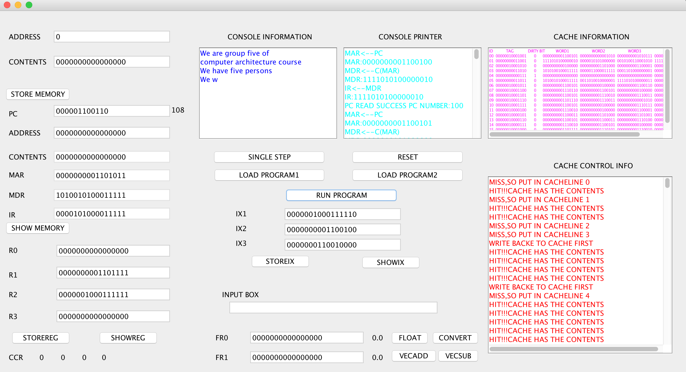
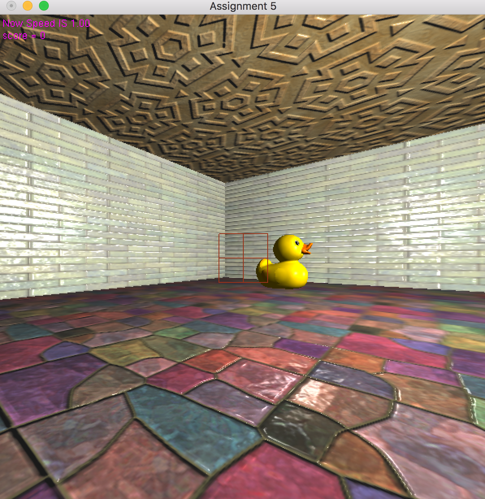
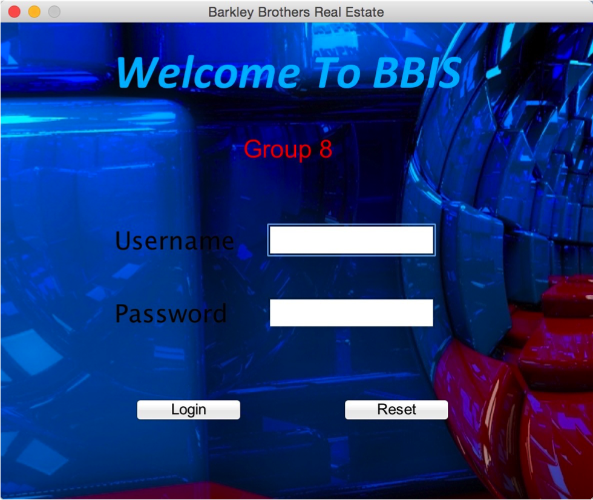
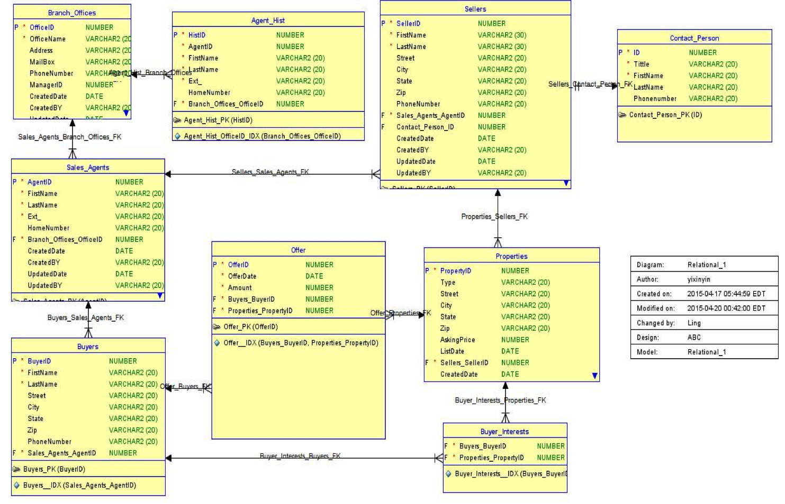
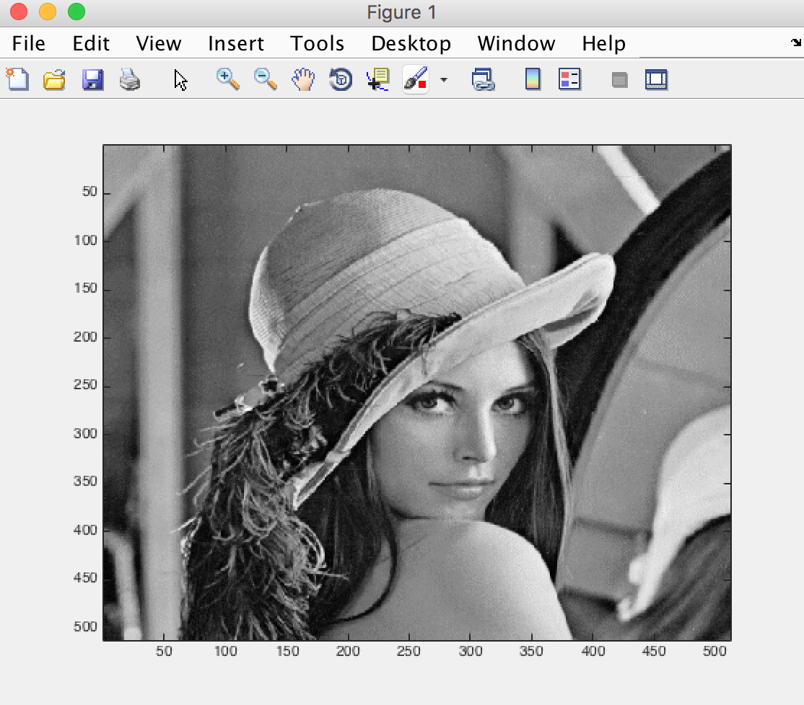
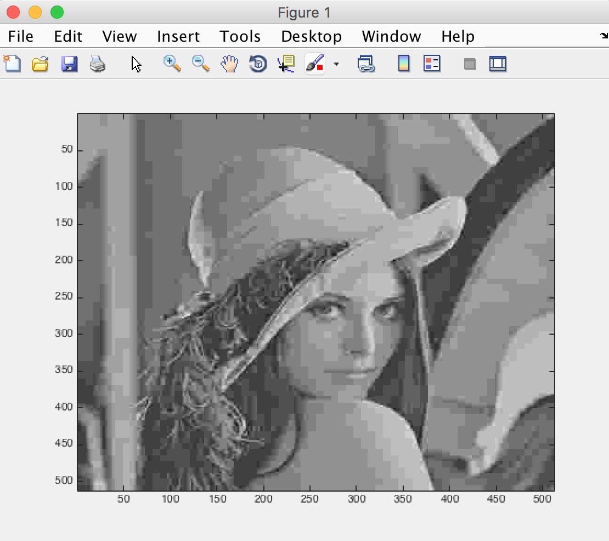
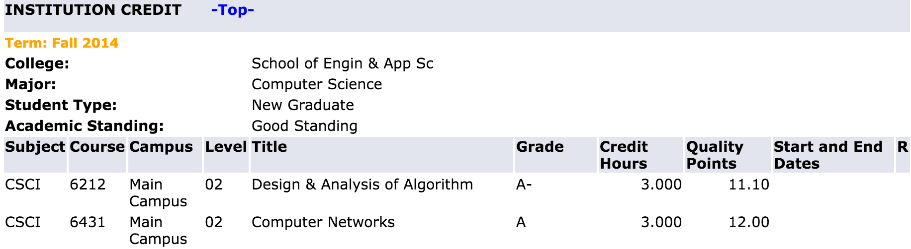
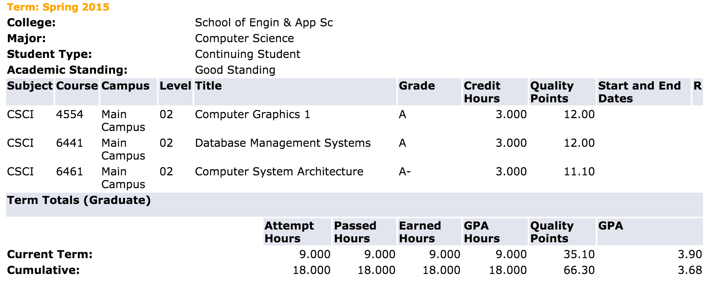
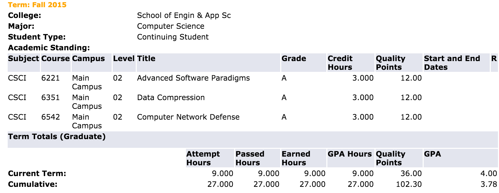

Simple Network Project
In the course "Computer Network", I learnt some basic knowledge on computer network. The project includes some basic concept. For Example, Http protocol simulation, RIP protocol simulation and so on. Finally I got A in this course.
Learn More September 2014 to December 2014Computer Architecture Simulation
In the course "Computer Architecture", I design and implement a CISC instruction simulator. It could simulate executing instructions like real instruction set. Finally I got A- in this course
 Learn More January 2015 to May 2015
Computer Graphic With OpenGL
In the course "Computer Graphic With OpenGL", I learnt the basic knowledge on computer graphic processing with OpenGL. In the term Project, I design a simple game "Shooting Ducks" with 3D effect. Finally I got A in this course.
 Learn More January 2015 to May 2015
Database Management System
In the course "Database Management System", I learnt the basic knowledge on Oracle Database. I learnt the SQL and some schema of the Oracle Database. In the term project, I design a simple database management system with a friendly UI and implement it. Finally I got A in this course.
  Learn More January 2015 to May 2015
Data Compression on Image
In the course "Data Compression", I learnt the basic knowledge on The Compression to images using Matlab. I implement JPEG compression in my term project. Basically, it compresses a gray-scaled image to a bit stream and you could config its compression ratio. Finally I got A in this course.
  Learn More Aug 2015 to Dec 2015
Computer Advanced Software Paradigms
In the course "Advanced Software Paradiam", I learnt the basic rules and schema on software engineering. I implement a lot of schema such as OO programming, concurrent programming. They are all just simple demo. I need to study more on this because it is really hard to fully understand. Finally I got A in this course.
Learn More Aug 2015 to Dec 2015
My Grade
During the last two years I have already taken 8 courses. And here is my grades until today.
   Summary